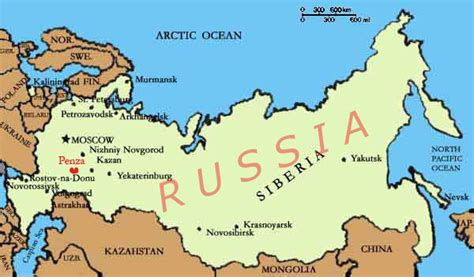
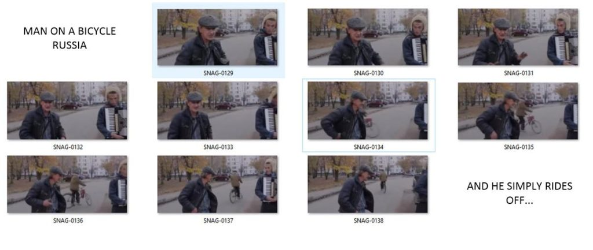
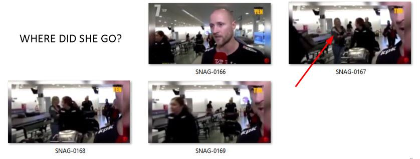

One of my contentions is that time, as we understand it, does not exist.
Instead, what we view as time is actually a constantly changing “bubble” of reality. We view the passage of changing events as “time”. It is a direct arrow.
However, that is an illusion. Our reality is a constantly changing bubble. Within that bubble, both our future histories, as well as our past histories (!) are subject to change. This bubble of reality is an environment, set up by soul, to create experiences by which the consciousness can be exposed to.
It is customized to the consciousnesses that inhabit it. And also influenced by the thoughts of nearby or adjacent realities (world-lines). Each time we have a thought, our reality changes and reorganizes. Often we don’t see the changes. They only manifest later.
In this post I will present two examples, caught on film, where our reality changes.
What makes these observed actions, qualify for a change in reality, is that the changes are recorded by the observer. That’s right. Thoughts change our reality, and the thoughts of the observer is the mechanism for this. In both cases there is no clear view of what transpired. One micro-second the change happens, and the nexus of the change is hidden.
The examples shown identify people leaving, and people entering our reality. Instead of consideration towards MWI slides or world-line changes, these examples stand alone as the angle of the observer recording the event are clearly showing something other than world-line egress or entry.
Introduction
The traditional model of the universe is well known. There is one physical world. We all live on it and share our experiences on it. When we die, we go elsewhere outside of our reality.
In this traditional model, our behaviors while we are alive determine the manifestation of our experiences afterwards. Heaven or Nirvana if we are good, Hell or damnation if we are bad.
This model has been fine for many centuries. However, the moment that we want to leave our reality, it all collapses. This is because our traditional model cannot explain the nature of the quantum realm, the behaviors of entangled particles and the duality of observed behavior due to thought influences.
For us to venture outside of our reality, we must change the way that we look at things. We must recognize that the world, as we assume it to be, does not exist. Instead something else exists.
How the Universe Works
What everyone seems to think “Heaven” is, is the sum totality of what there is. It is all and everything. Including this blog post and you.
Heaven is also graduated. It possesses different regions and areas. Each region or area have different concentrations of quanta. They form different densities. Some of which are very dense with one type of quanta, and others are dense with other combinations of quanta. It is a complex “soup” or “stew” of quanta that pop in and out and move about all under the influence of other “influences” (I will discuss these later.).
Consider "Heaven" to be everything. It includes the physical universe and the unseen "Heavens" often referred to in religious writings. It is a place where everything is composed of the smallest building blocks or components possible - quanta.
Within this realm, are clumps and arrangements of quanta. The quanta naturally starts to entangle with other quanta. They form arrangements, and dance about in certain ways. Over time, they get larger and more complex. They form things. They precipitate into simpler, slower and coarser things such as physical rocks, dust and energy.
Eventually, some of the quanta form into constructions that obtain sentience. The groups of quanta with sentience are called "souls".
The souls realize that the way that they can grow and advance is to organize their quanta. There is only one problem. Quanta can only organize through entanglements. They need to entangle with other quanta.
The way entanglements work is through association, or better yet, experiences.
Our Bubble of Reality
So, in order to obtain these experiences, the soul creates a bubble within Heaven.
The soul creates a defined ψ -epistemic region. This region comes from a template of all the possible realities. It is chosen specifically for the kinds of experiences that its’ consciousness would acquire while within the bubble.
It is an environment where the soul can obtain experiences.
These “bubbles” are regions that can best be defined as a construction. They are constructed regions manufactured by a given soul to obtain experiences within. These regions are unique and custom for a given consciousness. They are unique.

A soul would connect to this bubble of reality via a “tube” or an interface. We call that interface as “consciousness”. Souls can have multiple consciousnesses but only one consciousness may occupy a given reality at a time.
A bubble of reality consists of four set “dimensions”. Three spacial dimensions and one of entropy; time.
The "passage of time" is simply our reality bubble changing by our thoughts. Additionally, other nearby bubbles also move about and change. They can influence our bubble as well.
The control over this bubble of reality is quite possible. That is because our reality changes with our thoughts. Each thought changes it.
Since each thought changes our reality, you could very well come to the conclusion that thoughts create time. This is because a change in the state of our reality is perceived as time.
Indeed, the thoughts of the consciousness within the reality can alter the reality. Thoughts can make or break the experiences of the consciousness. As such the soul can learn from the consciousness and it’s decision making process. This is of course, through manipulation of the three dimensions plus the “dimension” of time.
Consciousness experience events within the reality. As such they generate thoughts. The thoughts alter and create the reality that the consciousness exists within. As such, the consciousness obtains experiences and learns from them.

“Seen” dimensions typically are referred to as the physical world. While “unseen” dimensions are referred to as various levels or dimensions of Heaven.
But, what exactly is heaven?
Please refer to the image above. How “heaven” is organized. (above). This diagram if a simplistic version of what a human “heaven” looks like. Let’s suppose you (the reader) is sitting down in your house reading this manuscript. That figure is the icon of the blue person shown by (B). You exist within this “bubble” or reality also shown by (R1). This “reality” includes the chair you sit in, the television show that you are watching, and the coffee beside you.

Extending beyond your (physical) reality is your “extended” (non-physical) reality (R2) which consists of your thoughts, memories and everything associated with it (also known as the “quantum cloud”).
Today, we recognize the “unseen world” to a degree. We recognize radio waves, for instance. We are studying gravitational waves, and have noted the end results of emotion on the physical body. Up until a few decade ago all this was considered the “unseen”. Which was part of Heaven.
Over time, as science progresses, we will uncover more and more of the unseen. Item by item, we will get closer and closer to what our true reality actually is.
Today, your thoughts regarding what you are now reading are moving about in this (R2) reality. This area contains not only thought, but emotion and other generated “influences” (far too complex to discuss at this time).

However, you have a soul (A) that is part of who you are. This soul only partially occupies your reality. In fact, it spends the vast bulk of it’s time outside of your “reality”. You know it exists, but you are unaware of it’s “day to day” experiences, challenges and behaviors.
Your soul can create numerous “realities” with numerous “individuals” (of which YOU are but one of the people that your soul creates) occupying those realities. This can occur at different times and at different locations. However, for now, let’s keep it simple and suppose your soul has created only one “reality” (R1) and (R2) for one person (B), you the reader.

Now, let’s suppose that you are married to another person that is part of your life. (A pretty common situation.)
That person would be represented by (C) which is but a “quantum shadow” of another person. It is not the ACTUAL person. It only seems that way. (Though in your reality, that person is just as real as anything else in your reality.)

What you see is their world-line version of where they married you and share your reality. It is not an actual reality (from their point of view, but rather the world-line version of them). (Your quantum-shadow spouse is but one version of a near infinite number of world-line variations of that particular person.)
That person (D) is actually living within their own “reality “just like you are. They may or may not see a quantum shadow of you. It is all determined by their version of reality. This of course is determined by their soul (E).

What is of most interest here is how their thoughts affect your reality (R1 & R2). While we all have our own “bubble” or reality that we live and exist within, our reality is constantly in flux by the thoughts of others (G). We view these effects as the “passage of time”.
The influence of the quantum-shadow of those nearest to us absolutely shape and mold the realities that we participate in. We can alter their influence by having “strong personalities”, or trying to isolate ourselves from others. However, the more we do so, the less likely we are to learn lessons and have experiences. It is the overlap of thought influences that create the experiences that we learn from.
Both your (A) soul and your spouse’s soul (E) exist within a heaven (F).
Your soul’s can work out different “realities” or “adventures” for both of you to share to obtain experiences.

The idea, of course, is to obtain experiences and configure the quantum clouds associated with the constructed realities that the soul utilizes. As soul grows and configures itself, it can “improve” and evolve. Hopefully towards an approved soul archetype and sentience.

As it improves and grows, the vast bulk of it’s quantum configuration dwells at different energy states. Each different energy state has a different place in heaven (F). Two are indicated by (J) and (I).
To prevent confusion, I would suggest that the reader consider “reality” as the first three dimensions, plus “time” as the fourth dimension.
I would then suggest that the fifth dimension, as world-line swapping (alteration of the “reality” “bubble”). This is very easy to visualize by using the above-mentioned model. For to understand what is happening in this case, the “quantum shadows” within your reality are being rearranged.

In “world-line” travel, all that is taking place is that the “quantum shadows” are being rearranged within one’s “bubble” of “reality”. This is fifth-dimensional travel. In the example above, Fifth-dimensional travel as world-line travel.
Quantum shadow (C) changes to fit the new revised “realty”. (It is now a yellow person instead of a red person.) We, as a participant within our reality look upon these changes as “world-line” travel.
From this point of view, it should be clear. That obtaining world-line dimensional travel is actually accessing our own soul and requesting it to alter our reality to fit our needs, while at the same time keeping the educational lessons that we are to obtain the same or better. This can be accomplished through certain techniques. In my case, we utilized a biological artifice to bend reality (within the confines of my experience structure).
So, in all actuality, there isn’t really any kind of “travel” at all. What is actually happening is the “reality” construct changes in accordance with the wants and needs of the soul.
If a given person, within a “reality” bubble wants to change his “world-line” he would be able to do so with the proper technology. However the changed “world-line” that manifests would be one that would either have the same and equal types of experiences for the soul, or that it would be one that would have more or “better” experiences.
There are even more interesting nuanced versions of “world-line” travel at the “higher” dimensional values. However, for our purposes, let’s keep it simple. I would then suggest anything above the fifth dimension as the realm of “heaven”.
Our Bubble is Constantly Changing
Our reality bubble is constantly changing.
Depending on your point of view, consciousness either [1] migrates from one bubble of reality to another, OR [2] the bubble itself changes into something different.
I personally believe that the bubble itself changes. However that is too difficult a concept to help explain world-line slides. So, using the idea that consciousness migrates from one location to another (one world-line to another) as a temporary crutch that we can use to illustrate how this works.
This is thus another 'secret of the universe". Time does not exist. Not mathematically, and not physically. It is the perception of our own individual consciousness as it moves from one "bubble of reality" to another.
Think of a movie reel. It consists of individual photos that are strung together. By changing the images you obtain the illusion of movement. That is what time is.
- Each world-line in the MWI is like a frame in a movie.
- The movement of the frames is viewed by consciousness as “time”.

Quick Review
Before we need to go further, please note the summary of state regarding the universe. Originally found here…

- Depending on the scale of consideration, we have a threshold of consciousness.
- Consciousness can not exist below that threshold.
- Consciousness generates thoughts.
- Below the consciousness threshold is a universe that is independent of thought.
- Above the consciousness threshold we have a reality that is ruled by thought.
Finally,
- We exist within two (x2) universes simultaneously. One is the reality that our consciousness inhabits, and the other is the realm where our soul exists.
- One universe is ruled by thought and the other is not.
Additionally,
- The ψ is a measure of how thought alters our reality.
- Heaven is ψ-ontic.
- Our reality is ψ -epistemic.
- Tests seem to confirm this.
Putting Everything Together
The sum totality of everything is ψ-ontic. It contains a number of “Heaven(s)”. Souls, which are self-aware clusters of quanta in the form of garbons, create ψ -epistemic “bubbles” of reality, and place consciousnesses there to obtain experiences.
- Experiences plus thoughts create sentience.
- Sentience is a building block that establishes garbon formation.
- Garbon formation, configuration and utilization is how souls grow, advance and move toward the divine.
As consciousness moves about within the ψ -epistemic “bubbles” of reality, thoughts are created and action occurs. The very nature of this CHANGES the “bubble” of reality. We view this change as gradual. We call this the “passage of time”.
However,
Our reality is often changed by huge events, actions and decisions from significant sources. Not just adjacent trivialities such as thought and intent. When this happens, the reality is jolted and more radical change occurs.
This can sometimes be observed.
Man on a bicycle
An old man on a bicycle appears out of nowhere in Penza, Russia.

In a video that originates out of Russia, we can see a man pop into reality behind a person telling a story. That is the way it actually happens. You pop into reality, and you pop out of reality. In this case, it is obvious that there is no one behind the person talking. As he is animated and turning about in such a way that it is very clear, that no one is behind him.
Then suddenly a person riding a bike just simply rides out from behind him.
Of course, there are those who would argue that it is simply just an unusual camera angle as the culprit. Moreover, indeed that might be the case. Alternatively, it could also be a well done fake and hoax. Who am I to say? However, I post this as a good example as to what reality switches are like.
Notice that there isn’t any kind of flash, disturbance in the video recording, noise (that would startle the other people), gust of wind, unusual smell or anything like that.

One interesting point about this video is that as soon as the old man on the bike goes through the portal, he puts his left foot down to stop the bicycle (forward) movement, and then turns the bicycle to the left instead of going straight as he was obviously planning to do (when entering the portal). Also, take note that he instinctively pedaled away from the observers when he arrived. It is almost like he was trained to do so.
This leads me to believe that he has entered “our” reality, with the understanding that he is entering a new reality.
If the “nay sayers” were correct, then for a good minute the bike rider rode the bike in a straight line heading directly for the animated man talking. Given physics, this person should have ridden straight through the park behind the animated man, and avoided the trees without swerving. Then, when he touched the pavement behind the animated man, he abruptly changed direction, and made a 100 degree left turn. If that is what actually happened as described by the “nay sayers”, I must posit the most basic of questions; “Why would anyone want to do such a thing?”
Note who the traveler really is and how he appears. He is not a youthful young man in his 20’s. He is not dressed fashionably. He does not appear to be dangerous, wealthy, of importance, or beautiful. He is average. He is bland. He is uninteresting. He is the “real deal”.
Trust me, when you enter a new reality, you don’t want to be noticed. You want to blend in with the wall-paper.
This specific event can be viewed on the following video. Please note that this video has other examples of fakes and hoaxes interspersed in it. Also the voice over and music track leaves much to be desired. Please turn off the audio and watch the video free of “Halloween style” or “B-grade movie” music. Ignore the other fakes and hoaxes. Just concentrate on this particular instance.
https://www.youtube.com/watch?v=M_Hwlws9b1g&feature=youtu.be Watch from 3:12 to approximately 3:32.
I argue that it is difficult to see what is going on. Is it that a man enters “our” reality, or is it that “our” reality changes to one where the man exists?
Here is the most important point about this dimensional transport; it was NOT observed. Yes, the man was observed. We saw him arrive. What we did NOT see was him entering our reality. That was hidden. It happened BEHIND the other man with a hat.
So, instead of focusing on a man on a bicycle entering “our” reality. Let’s focus on the fact that the observer did not observe the specific entry point.
While the effect is similar, the methodology is not. Dimensional portal egress is a fifth dimensional technique, while MWI dimensional slides are a sixth or seventh dimensional technique. The bubble of reality is altered upon arrival.
The Differences
When I used the portal egress in Florida at the ELF facility, you could see the people entering the field. They would walk into nothing and disappear. We watched people enter into the portal. We watched them disappear. This is portal egress.
However, for MWI slides, the point of transition is ALWAYS hidden from the observer.
For MWI slides, the point of transition is ALWAYS hidden from the observer.
This tells me that this person was not involved in portal egress. They were involved in dimensional slides.
Portal egress is a fifth dimensional activity. You enter and move within a fifth dimensional reality. Physical locations, times and places change. However, MWI world-line slides are another matter all together. While they appear similar, they are not. MWI slides are a sixth or seventh dimensional event. Realities change.
In a fifth dimensional egress, such as the portal, you go from physical location “A” at time “a”, to physical location “B” at time “b”. Time travel is possible. Physical travel anywhere in the universe is possible. That is fifth dimensional travel.
You can see people entering the portal, and you can watch them leave the portal.
In sixth (or seventh) dimensional travel, the reality itself changes. Because reality is associated with consciousness, you will never actually see the egress moment. It will be obscured from sight. In the case with the old man and the bicycle, you cannot see the exact moment that the reality changes because it is hidden from view.
Reality is connected to consciousness. When an outsider enters your reality, you will not be able to observe the entry if they are using MWI slide technology.
That is seventh (or sixth) dimensional MWI slides. It is a control over the reality, that naturally changes with thoughts within and around that bubble of reality. Therefore, it is a much more capable mechanism for utility.
In a sixth (and seventh) MWI slide you go from physical location “A” at time “a” and reality “AAA”, to physical location “B” at time “b” in reality “BBB”. Everything is possible. You go from one place at one time in one reality to another one in a different place and a different time.
Girl disappears
Here is an interesting video. A man is being interviewed in what is apparently an airport baggage claim. In the background are two women. As the one woman says good bye, the other woman disappears.

In frame, 0166 a man is being interviewed by a camera crew. We see that in the background to his right (our left) are people collecting their baggage and leaving the area. In particular are two women both shown chatting in a friendly manner typical of strangers in an airport. See frame 0167. As the woman departs in frame 0168, we discover that the woman that she had just been chatting to has disappeared in frame 0169.
Where is she? Frame 0014 and frame 0015 taken less than a millisecond or two later shows her completely missing.
Playing the "devils advocate"... Perhaps there are other physical reasons for this strange disappearance. Maybe this was a strange camera angle that caused this effect, or maybe she was playing a prank or trick. However, if the woman intentionally wanted to hide, she would have to had immediately fallen to the floor to get out of the view of the camera. What this represents could be anything. However, if I were to put a technological spin or attempt to interpret what I see, I would suggest use of an invisibility device, or a dimensional shift. This type of strange event is not suggestive of a time portal or similar device.
The reader should also take note that all of the people so presented in this post are all “normal” and “average” appearing. She is just simply a friendly stranger. Not one that would cause a person to make a “double take” or take notice of them in any way.
This specific event can be viewed on the following video.
Other articles and videos regarding this particular event can be found at these links…
- Woman disappears during live TV interview, internet goes crazy
- The Internet is going crazy over this video
- Watch this woman disappear on live TV
- Where did she go? Internet is baffled after woman ‘DISAPPEARS’ on live TV
- Full you-tube video of the event
Examples of Seventh Dimensional MWI slides
For what ever it is worth, a sixth or seventh dimensional slide will have variances. No two realities are identical. When you try to target a specific location, the mere thoughts that you have (“I’m going to a different reality”) will result in changes to your target reality.
While my role involved this kind of travel, my personal experiences were not that radically different from what you would expect. Here’s a couple of examples. They are nothing stunning, or even noteworthy. They just serve as a constant reminder that when a person enters a reality, the thoughts alter that reality in different ways.
The World-line without Zippers
Most world-lines looked like every other one. If you did not know better, you might not realize that your reality was different.
When you slide, you just cannot notice any difference. Once, I did a slide and everything looked the same. No big deal. As always, I just continued to do my work. My work assignments were the same, and my friends were the same and my wife was the same. My pets were the same.
As always, I wore a polo shirt and loose tan slacks. I was pretty typical in my role within the corporate working environment. I wore my badge on a lanyard that hung around my neck. I wore brown laced up shoes. I had a brown belt, and a pretty empty wallet (heh heh.).
However, I did notice something different when I went to the bathroom to take a pee.
My trousers did not have a zipper. Instead of a zipper were buttons. That’s correct. There were three buttons that I had to undo to go and pee. I don’t know if I liked having a button front, or a zipper front. I think a zipper front is much more convenient, but there was something clean and simple about having buttons…
This serves as a pretty good example of the kinds of differences you might expect when you conduct a seventh dimensional slide. Here’s another one. This one is much more radical.
The Plastic Surgery World-line
Most of the world-line slides occurred within hours or days. This period of time, a mere few hours, is not long enough to determine what the differences are in a new world-line. That is because, and I remind the reader, that most of my world-line slides were very similar to the previous world-line. This was by intention and was necessary for a host of reasons.
I well remember that I once went into a new world-line that looked identical to the previous one. However there was one noticeable difference that I well recall. It was so odd that I will never forget it. There was an advertisement for a plastic surgery hospital. On the billboard was an attractive woman who was cradling her tummy as she was obviously nine months pregnant. The words in the advertisement went something like this;
“Let Doctor XXXXXX sculpt your body for the expectant mother look.”
WTF? In that world-line you could have plastic surgery that would make you look like you were nine months pregnant. Talk about doing a “double take”!
Since that time, I have never seen anything like that. Heck, I don’t even know how you would actually do that in practice. WTF?
What can we Learn?
- Fifth dimensional travel enables us to travel geographically anywhere in the universe. That includes the other side of the planet. That includes a planet around a distant star. That includes a planet in a very distant galaxy.
- Fifth dimensional travel enables us to travel anywhere in time and arrive at any date. That includes travel to (projected possible) future. That includes (assumed possible) pasts.
- Fifth dimensional travel influences world-line realities trivially. While thoughts are influenced by our thoughts and actions, the influence is not significant. Resultant observations and associated thoughts do not change the structure of destination realities.
As such, now let’s look at the more complex MWI slides. (Personally, I am shaky on the differences between sixth and seventh dimensional slides. So I use both interchangeably. You can chalk that up to my ignorance. I know that there are differences, but as far as my exposure was concerned, it’s almost like I jumped over 6th dimensional travel and went straight to seventh dimensional egress.)
- 6th/7th dimensional MWI slides affect consciousness.
- As such, they have a significant influence in the construction of our reality.
- The shape of the reality that our consciousness inhabits affects the thoughts that we have.
- Our thoughts directly influence our sentience.
- Sentience is a tool that shapes garbon and swale configurations in the soul
How does the thoughts that we have influence WMI slides? That is a very complicated issue, and something for an entire series of posts. For now, just realize that there is a relationship present.
Conclusion & Take Aways
Many of the unexplained events that we come across is easy to explain when you have a comprehensive understanding of how the universe works.
- The passage of time is the name that our consciousness give to understand an ever changing reality.
- There is a significant difference between fifth dimensional portal egress, and seven dimensional MWI slides.
- Thoughts influence reality. The level of influence depends on the dimensional changes inherently involved.
FAQ
Q: Why does higher order dimensional travel (7th compared to 5th) have a greater thought influence?
A: Research suggests that the human brain is almost beyond comprehension because it doesn’t process the world in two dimensions or even three. No, the human brain understands the visual world in up to 11 different dimensions. The brain processes visual information by creating multi-dimensional neurological structures, called cliques. The cliques have up to 11 different dimensions and form in holes of space, called cavities. Once the brain understands the visual information, both the clique and cavity disappear.
The cliques work with memories to generate thoughts. The level of activity involved interfaces with the reality as accessed by consciousness. The strongest interactions are at the sixth and seventh dimensional states.
At every moment you are thinking, multiple multi-dimensional structures arise in your physical three dimensional brain. It is an open system interacting with much higher dimensional realities that cannot be encompassed in the material 3-d world. As such, higher order topologies are necessary to describe thought. Thought does not occur in the three dimensional material stuff of life solely or exclusively, but outside it, as something coupled with it.
Q: Why is the man on a bicycle and the woman at the airport considered to be seventh dimensional MWI slides?
A: In both cases the absolute point of transition into our reality is obscured. The observer cannot notice the change. I argue that this is a fundamental aspect of our reality that does not permit the observer to observe seventh dimensional egress.
Q: Why do both the woman and the man who transported into the reality seem normal and plain?
A: A person who does utilize any type of dimensional transport does not want to bring attention on to them. Instead they want to be forgotten and not be noticed as they go about their various tasks.
MAJestic Related Posts – Training
These are posts and articles that revolve around how I was recruited for MAJestic and my training. Also discussed is the nature of secret programs. I really do not know why the organization was kept so secret. It really wasn’t because of any kind of military concern, and the technologies were way too involved for any kind of information transfer. The only conclusion that I can come to is that we were obligated to maintain secrecy at the behalf of our extraterrestrial benefactors.


MAJestic Related Posts – Our Universe
These particular posts are concerned about the universe that we are all part of. Being entangled as I was, and involved in the crazy things that I was, I was given some insight. This insight wasn’t anything super special. Rather it offered me perception along with advantage. Here, I try to impart some of that knowledge through discussion.
Enjoy.


MAJestic Related Posts – World-Line Travel
These posts are related to “reality slides”. Other more common terms are “world-line travel”, or the MWI. What people fail to grasp is that when a person has the ability to slide into a different reality (pass into a different world-line), they are able to “touch” Heaven to some extent. Here are posts that cover this topic.


Links about China


China and America Comparisons


Learning About China


Posts Regarding Life and Contentment
Here are some other similar posts on this venue. If you enjoyed this post, you might like these posts as well. These posts tend to discuss growing up in America. Often, I like to compare my life in America with the society within communist China. As there are some really stark differences between the two.


More Posts about Life
I have broken apart some other posts. They can best be classified about ones actions as they contribute to happiness and life. They are a little different, in subtle ways.


Stories that Inspired Me
Here are reprints in full text of stories that inspired me, but that are nearly impossible to find in China. I place them here as sort of a personal library that I can use for inspiration. The reader is welcome to come and enjoy a read or two as well.